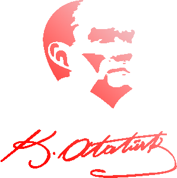

İstiklal Marşı
Korkma, sönmez bu şafaklarda yüzen al sancak;
Sönmeden yurdumun üstünde tüten en son ocak.
O benim milletimin yıldızıdır, parlayacak;
O benimdir, o benim milletimindir ancak.
Çatma, kurban olayım çehreni ey nazlı hilâl!
Kahraman ırkıma bir gül… ne bu şiddet bu celâl?
Sana olmaz dökülen kanlarımız sonra helâl,
Hakkıdır, Hakk’a tapan, milletimin istiklâl.

HTML
Bu metin soldan sağa doğru.
Bu metin sağdan sola doğru.
Web Tabanlı Uygulama Geliştirme Komisyon, 2021. HTMLtable etiketi tablo oluşturur.
HTML standart metin işaretleme dilidir.
HTML standart metin işaretleme dilidir.
HTML standart metin işaretleme dilidir.
HTML standart metin işaretleme dilidir.
Kopyalama klavye kısa yolu : Ctrl+C
Bakınız, şair vatanı ne güzel tarif ediyor:Bayrakları bayrak yapan üstündeki
kandır.Toprak eğer uğrunda ölen varsa vatandır.
Örnek bilgisayar program çıktısı
İlk ders ‘da başlıyor.
Matematik Kuralı: x(y+z)=xy+xz
Başlık tıklandığında içeriğe ulaşabilirsiniz
its ultrakillin time (i swear me no steal from zibonx)
H2O
(x+y)2+5